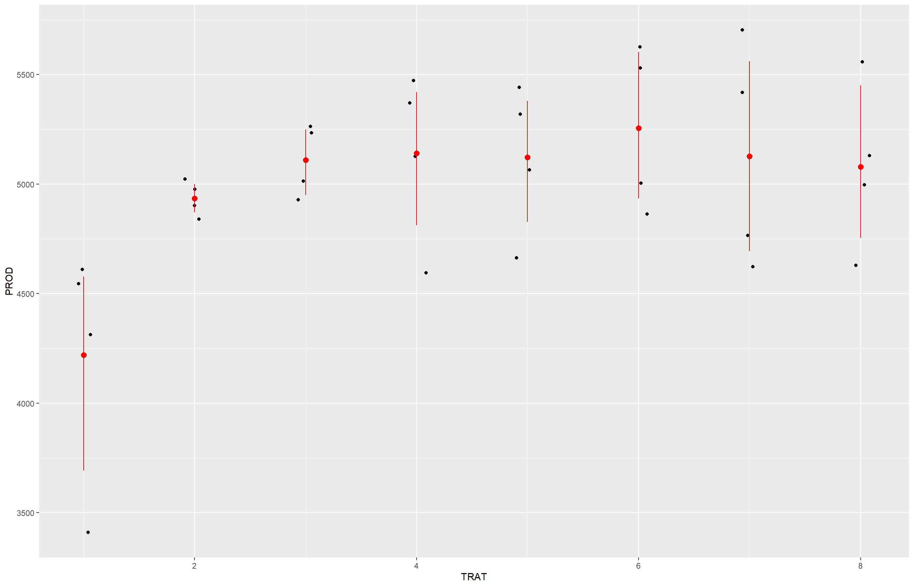
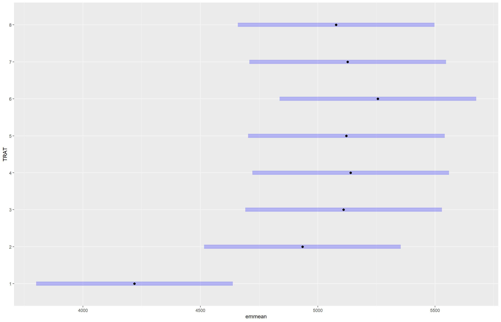
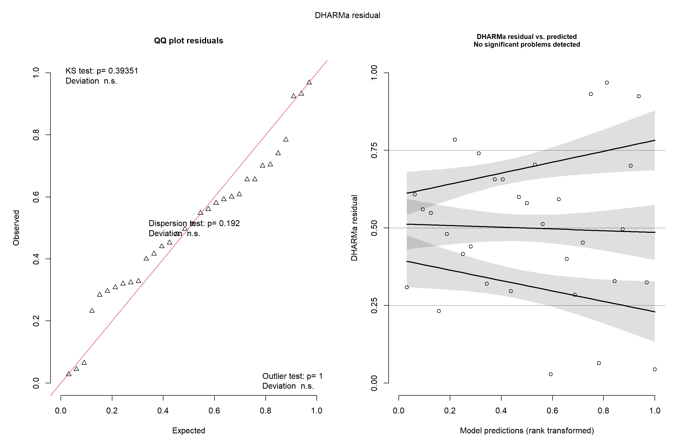
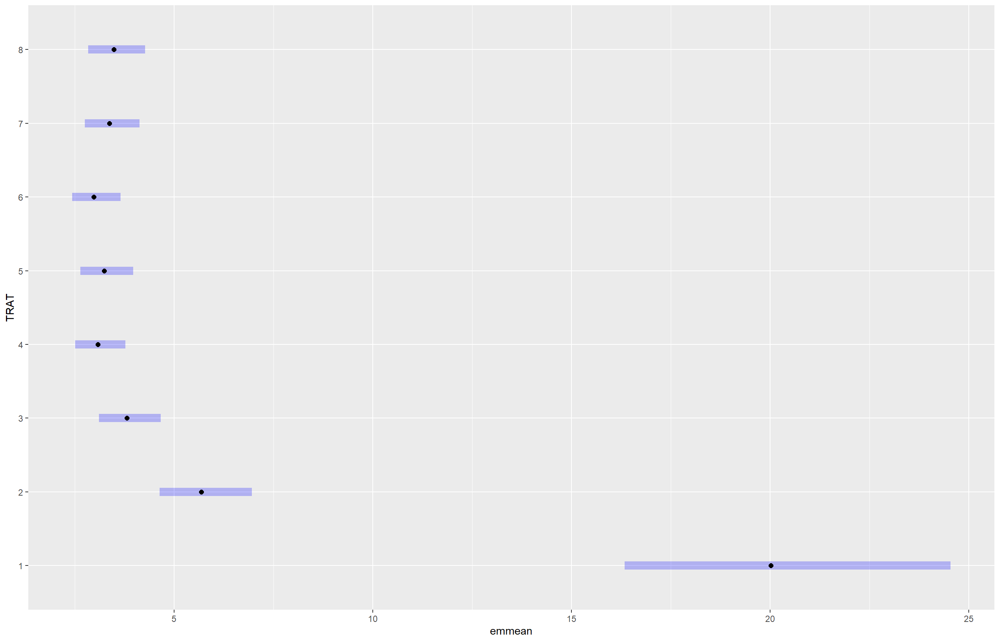
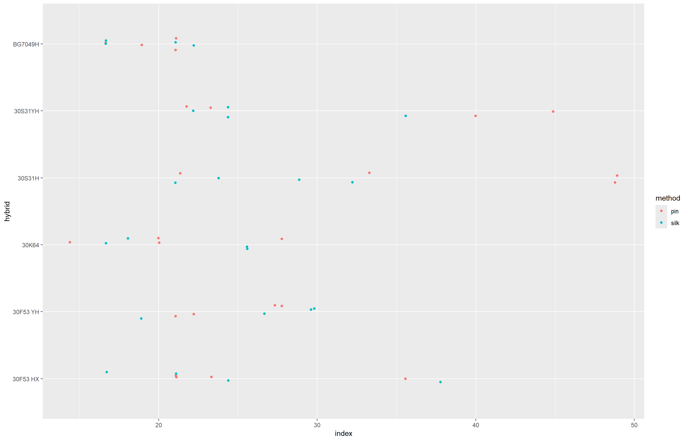
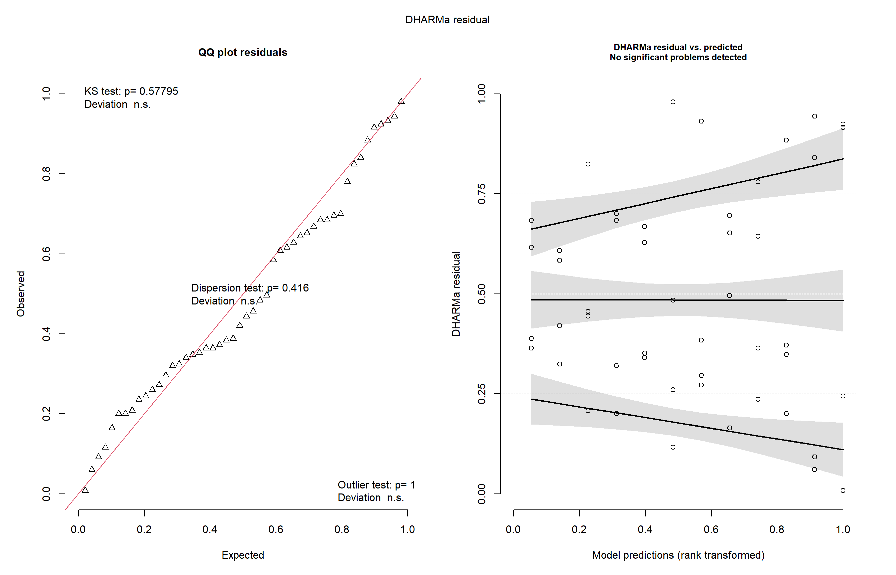
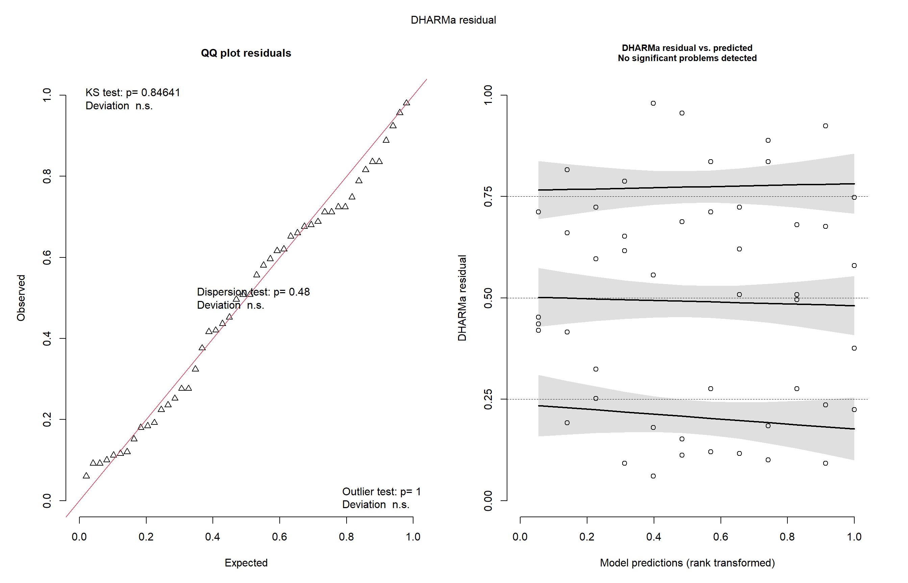
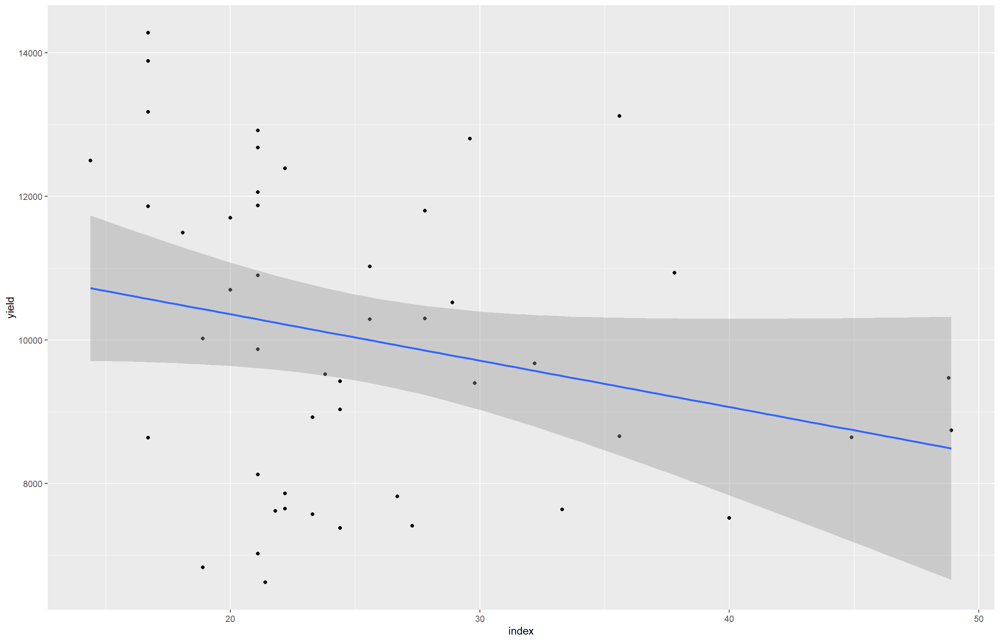

library(gsheet)
library(ggplot2)
library(readxl)
library(tidyverse)
library(Hmisc)
library(multcomp)
library(emmeans)Aula 5
Pacotes utilizados nessa aula
campo <- gsheet2tbl("https://docs.google.com/spreadsheets/d/1bq2N19DcZdtax2fQW9OHSGMR0X2__Z9T/edit?gid=866852711#gid=866852711")
view(campo)
campo |>
ggplot(aes(TRAT, PROD))+
geom_jitter(width = 0.1)+
stat_summary(
fun.data = "mean_cl_boot",
colour="red", width = 0.3)
campo$TRAT <- factor (campo$TRAT)
campo$BLOCO <- factor (campo$BLOCO)
m_campo <- lm(PROD ~ BLOCO + TRAT, data = campo)
m_campo
Call:
lm(formula = PROD ~ BLOCO + TRAT, data = campo)
Coefficients:
(Intercept) BLOCO2 BLOCO3 BLOCO4 TRAT2 TRAT3
4312.1 -156.4 -99.5 -115.4 715.8 890.8
TRAT4 TRAT5 TRAT6 TRAT7 TRAT8
921.0 902.8 1037.0 908.3 859.0 anova(m_campo)Analysis of Variance Table
Response: PROD
Df Sum Sq Mean Sq F value Pr(>F)
BLOCO 3 105665 35222 0.2171 0.88340
TRAT 7 2993906 427701 2.6367 0.04021 *
Residuals 21 3406431 162211
---
Signif. codes: 0 '***' 0.001 '**' 0.01 '*' 0.05 '.' 0.1 ' ' 1means_campo <- emmeans(m_campo, ~ TRAT)
means_campo TRAT emmean SE df lower.CL upper.CL
1 4219 201 21 3800 4638
2 4935 201 21 4516 5354
3 5110 201 21 4691 5529
4 5140 201 21 4721 5559
5 5122 201 21 4703 5541
6 5256 201 21 4837 5675
7 5128 201 21 4709 5546
8 5078 201 21 4659 5497
Results are averaged over the levels of: BLOCO
Confidence level used: 0.95 plot(means_campo)
library(multcomp)
cld(means_campo) TRAT emmean SE df lower.CL upper.CL .group
1 4219 201 21 3800 4638 1
2 4935 201 21 4516 5354 12
8 5078 201 21 4659 5497 12
3 5110 201 21 4691 5529 12
5 5122 201 21 4703 5541 12
7 5128 201 21 4709 5546 12
4 5140 201 21 4721 5559 12
6 5256 201 21 4837 5675 2
Results are averaged over the levels of: BLOCO
Confidence level used: 0.95
P value adjustment: tukey method for comparing a family of 8 estimates
significance level used: alpha = 0.05
NOTE: If two or more means share the same grouping symbol,
then we cannot show them to be different.
But we also did not show them to be the same. m_campo <- lm(log(FER) ~ BLOCO + TRAT, data = campo)
m_campo
Call:
lm(formula = log(FER) ~ BLOCO + TRAT, data = campo)
Coefficients:
(Intercept) BLOCO2 BLOCO3 BLOCO4 TRAT2 TRAT3
3.1347 -0.1964 -0.1878 -0.1675 -1.2600 -1.6600
TRAT4 TRAT5 TRAT6 TRAT7 TRAT8
-1.8718 -1.8211 -1.9052 -1.7825 -1.7491 anova(m_campo)Analysis of Variance Table
Response: log(FER)
Df Sum Sq Mean Sq F value Pr(>F)
BLOCO 3 0.2064 0.06880 1.7961 0.1788
TRAT 7 11.5210 1.64585 42.9665 4.838e-11 ***
Residuals 21 0.8044 0.03831
---
Signif. codes: 0 '***' 0.001 '**' 0.01 '*' 0.05 '.' 0.1 ' ' 1library(DHARMa)
plot(simulateResiduals(m_campo))
means_campo <- emmeans(m_campo, ~ TRAT, type = "response")
means_campo TRAT response SE df lower.CL upper.CL
1 20.02 1.960 21 16.33 24.54
2 5.68 0.556 21 4.63 6.96
3 3.81 0.373 21 3.11 4.67
4 3.08 0.301 21 2.51 3.78
5 3.24 0.317 21 2.64 3.97
6 2.98 0.292 21 2.43 3.65
7 3.37 0.330 21 2.75 4.13
8 3.48 0.341 21 2.84 4.27
Results are averaged over the levels of: BLOCO
Confidence level used: 0.95
Intervals are back-transformed from the log scale plot(means_campo)
library(multcomp)
cld(means_campo) TRAT response SE df lower.CL upper.CL .group
6 2.98 0.292 21 2.43 3.65 1
4 3.08 0.301 21 2.51 3.78 1
5 3.24 0.317 21 2.64 3.97 1
7 3.37 0.330 21 2.75 4.13 1
8 3.48 0.341 21 2.84 4.27 1
3 3.81 0.373 21 3.11 4.67 12
2 5.68 0.556 21 4.63 6.96 2
1 20.02 1.960 21 16.33 24.54 3
Results are averaged over the levels of: BLOCO
Confidence level used: 0.95
Intervals are back-transformed from the log scale
P value adjustment: tukey method for comparing a family of 8 estimates
Tests are performed on the log scale
significance level used: alpha = 0.05
NOTE: If two or more means share the same grouping symbol,
then we cannot show them to be different.
But we also did not show them to be the same. pwpm(means_campo) 1 2 3 4 5 6 7 8
1 [20.02] <.0001 <.0001 <.0001 <.0001 <.0001 <.0001 <.0001
2 3.525 [ 5.68] 0.1252 0.0048 0.0110 0.0028 0.0204 0.0343
3 5.259 1.492 [ 3.81] 0.7832 0.9335 0.6440 0.9843 0.9976
4 6.500 1.844 1.236 [ 3.08] 0.9999 1.0000 0.9976 0.9842
5 6.178 1.753 1.175 0.951 [ 3.24] 0.9984 1.0000 0.9994
6 6.721 1.906 1.278 1.034 1.088 [ 2.98] 0.9842 0.9431
7 5.945 1.686 1.130 0.915 0.962 0.885 [ 3.37] 1.0000
8 5.750 1.631 1.093 0.885 0.931 0.856 0.967 [ 3.48]
Row and column labels: TRAT
Upper triangle: P values null = 1 adjust = "tukey"
Diagonal: [Estimates] (response) type = "response"
Lower triangle: Comparisons (ratio) earlier vs. laterAqui nós importamos os dados da planilha compartilhada pelo professor, depois visualizamos os dados usando um gráfico de dispersão com intervalos de confiança, o que mostra as diferenças de produtividade e entre os tratamentos. Convertemos as variáveis TRAT e BLOCO em fatores e, em seguida, ajustamos a ANOVA usando lm(PROD ~ BLOCO + TRAT) para avaliar o efeito dos tratamentos, considerando os blocos como fator de controle. Aplicamos a função anova() para verificar a significância das diferenças.
Utilizamos o pacote emmeans para estimar as médias ajustadas dos tratamentos e o cld() para realizar comparações múltiplas, identificando quais tratamentos diferem entre si estatisticamente. Depois avaliamos a variável FER, e ela não atendeu aos pressupostos do modelo, aplicamos uma transformação logarítmica. Ajustamos novamente o modelo e usamos o pacote DHARMa para verificar os resíduos simulados. E terminamos calculando as médias ajustadas transformadas de volta à escala original (type = “response”) e realizamos novas comparações com cld() e pwpm(), para verificar quais tratamentos apresentaram diferenças significativas em relação à fertilidade.
milho <- gsheet2tbl("https://docs.google.com/spreadsheets/d/1bq2N19DcZdtax2fQW9OHSGMR0X2__Z9T/edit?gid=1345524759#gid=1345524759")
view(milho)
milho |>
ggplot(aes(hybrid, index, color = method))+
geom_jitter(width = 0.1)+
coord_flip()
milho$hybrid_block <- interaction(milho$hybrid, milho$block)
library(dplyr)
milho |>
mutate(hybrid_block = interaction(hybrid, block))# A tibble: 48 × 6
hybrid block method index yield hybrid_block
<chr> <dbl> <chr> <dbl> <dbl> <fct>
1 30F53 HX 1 pin 21.1 12920 30F53 HX.1
2 30F53 HX 2 pin 21.1 9870 30F53 HX.2
3 30F53 HX 3 pin 23.3 8920 30F53 HX.3
4 30F53 HX 4 pin 35.6 13120 30F53 HX.4
5 30F53 YH 1 pin 21.1 12060 30F53 YH.1
6 30F53 YH 2 pin 22.2 7860 30F53 YH.2
7 30F53 YH 3 pin 27.3 7410 30F53 YH.3
8 30F53 YH 4 pin 27.8 10300 30F53 YH.4
9 30K64 1 pin 20 11700 30K64.1
10 30K64 2 pin 20 10700 30K64.2
# ℹ 38 more rowslibrary(DHARMa)
library(lme4)
m_milho <- lmer(index ~ hybrid*method +
(1 | block:hybrid_block),
data = milho)
car::Anova(m_milho)Analysis of Deviance Table (Type II Wald chisquare tests)
Response: index
Chisq Df Pr(>Chisq)
hybrid 11.4239 5 0.04359 *
method 4.6964 1 0.03023 *
hybrid:method 15.8062 5 0.00742 **
---
Signif. codes: 0 '***' 0.001 '**' 0.01 '*' 0.05 '.' 0.1 ' ' 1plot(simulateResiduals(m_milho))
library(multcomp)
media_milho <- emmeans(m_milho, ~ hybrid | method)
cld (media_milho, Letters = letters)method = pin:
hybrid emmean SE df lower.CL upper.CL .group
BG7049H 19.4 3.57 24.9 12.1 26.8 a
30K64 20.6 3.57 24.9 13.2 27.9 a
30F53 YH 24.6 3.57 24.9 17.3 31.9 ab
30F53 HX 25.3 3.57 24.9 17.9 32.6 ab
30S31YH 32.5 3.57 24.9 25.2 39.8 ab
30S31H 38.1 3.57 24.9 30.8 45.4 b
method = silk:
hybrid emmean SE df lower.CL upper.CL .group
BG7049H 19.2 3.57 24.9 11.8 26.5 a
30K64 21.5 3.57 24.9 14.2 28.8 a
30F53 HX 25.0 3.57 24.9 17.7 32.3 a
30F53 YH 26.2 3.57 24.9 18.9 33.6 a
30S31H 26.5 3.57 24.9 19.2 33.8 a
30S31YH 26.6 3.57 24.9 19.3 34.0 a
Degrees-of-freedom method: kenward-roger
Confidence level used: 0.95
P value adjustment: tukey method for comparing a family of 6 estimates
significance level used: alpha = 0.05
NOTE: If two or more means share the same grouping symbol,
then we cannot show them to be different.
But we also did not show them to be the same. m_milho3 <- lmer(yield ~ hybrid*method +
(1 | block:hybrid_block),
data = milho)
car::Anova(m_milho3)Analysis of Deviance Table (Type II Wald chisquare tests)
Response: yield
Chisq Df Pr(>Chisq)
hybrid 22.5966 5 0.0004031 ***
method 0.1052 1 0.7456932
hybrid:method 25.9302 5 9.206e-05 ***
---
Signif. codes: 0 '***' 0.001 '**' 0.01 '*' 0.05 '.' 0.1 ' ' 1plot(simulateResiduals(m_milho3))
Aqui Importamos os dados do experimento com milho e visualizamos a variável index por híbrido e método. Criamos a variável hybrid_block para representar a interação entre híbrido e bloco, usada na modelagem mista com lmer(), considerando index como resposta e block:hybrid_block como efeito aleatório. Avaliamos os resíduos simulados com o pacote DHARMa e, com emmeans, estimamos as médias ajustadas dos híbridos por método, comparando-as com cld(). Repetimos o processo para a variável yield, ajustando novo modelo misto e verificando a qualidade do ajuste da mesma forma.
library(ggplot2)
milho |>
ggplot(aes(index, yield))+
geom_point()+
geom_smooth(method = "lm")
cor1 <- cor.test(milho$index, milho$yield)
R2_percentual <- (cor1$estimate)^2 * 100
R2_percentual*100 cor
632.3713